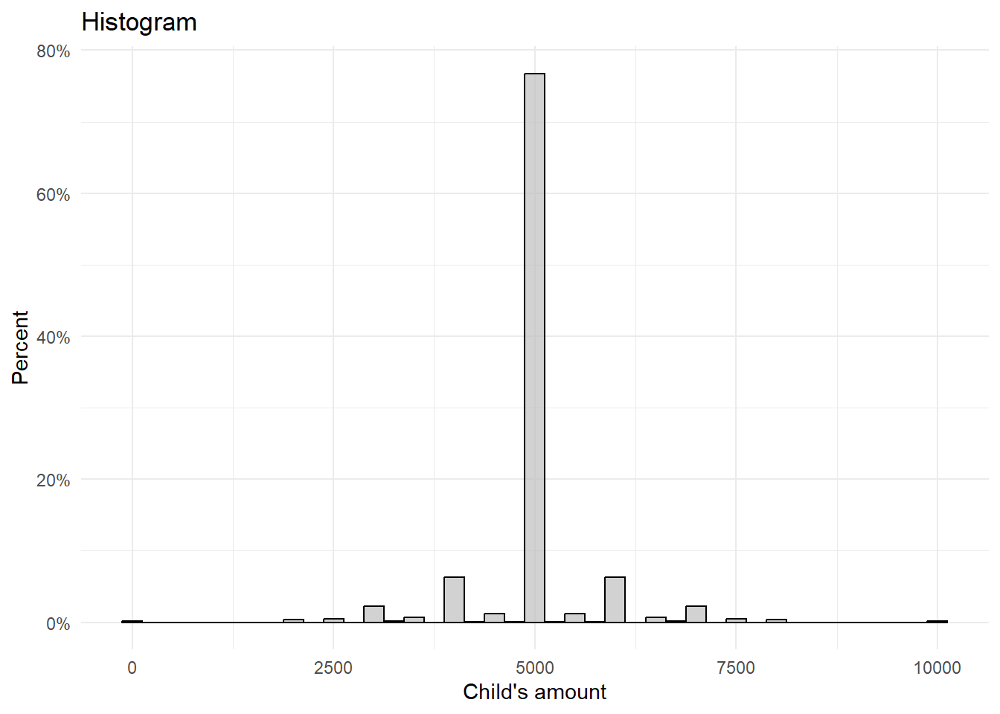

4. Übungsblatt (Faktorielle Umfrageexperimente)
1 Organisation
1.1 Arbeitsverzeichnis festsetzen
1.2 Packages installieren und laden
1.3 Einführung
In dieser Übung replizieren wir die Ergebnisse folgender Studie:
Tisch, Daria, and Tamara Gutfleisch. ‘Unequal but Just? Experimental Evidence on Distributive Justice Principles in Parental Inter Vivos Transfers’. Socio-Economic Review 21, no. 3 (2023): 1369–90.
Der Datensatz kann hier heruntergeladen werden.
Schenkungen von Eltern an deren Kinder sind von der moralischen Entscheidung geprägt, welches Kind wie viel erhalten soll. So können Eltern Schenkungen zwischen Kindern nach unterschiedlichen Gerechtigkeitsprinzipien aufteilen. Wenden sie das Gleichheitsprinzip an, schenken sie allen Kindern gleich viel. Wenden sie das Bedürfnisprinzip an, schenken sie den Kindern, die größere Bedürfnisse haben (z. B. Arbeitslosigkeit), mehr. Wenden sie das Austauschprinzip an, schenken sie den Kindern mehr, die im Gegenzug mehr für die Eltern machen (z. B. im Haushalt der Eltern helfen). Wenden sie das Anspruchsprinzip an, schenken sie den Kindern mehr, die bestimmte angeborene Statuscharakteristiken haben (z. B. Erstgeborene). Wir wollen untersuchen, inwiefern diese Prinzipien im Kontext von elterlichen Schenkungen von den Befragten befürwortet werden. Unterstützen die Befragten diese Prinzipien im selben Maße für Töchter und Söhne?
1.4 Daten einlesen
1.5 Variablenlabels einlesen
Code
# Load the variable labels
variable_labels <- read.csv("daten/just_transfers_variable_labels.csv", row.names = 1, stringsAsFactors = FALSE)
# View variable labels
#print(variable_labels)
# Loop through the labels and assign them to variables in the dataset
for (var in names(variable_labels)) {
if (var %in% names(df)) {
var_label(df[[var]]) <- variable_labels[[var]]
}
}1.6 Value labels einlesen
2 Kennenlernen des Datensatzes
2.1 Wie viele Beobachtungen enthält der Datensatz?
2.2 Wie viele befragte Personen sind im Datensatz enthalten?
2.3 Wie viele Vignetten hat jede befragte Person bewertet?
2.4 Wie viele Vignetten gibt es?
2.5 Wie viele Decks gibt es?
2.6 Dimensionen und Ausprägungen
Welche Dimensionen gibt es und welche Ausprägungen können diese aufweisen? Tipp: Nutze den Datensatz: value_labels
3 Orthogonalität und Balance
3.1 Sind die Dimensionen orthogonal?
Code
# Dummy-Variablen mit dplyr erstellen
df <- df %>%
mutate(
# Dummy-Variablen für firstborn
firstborn_1 = if_else(firstborn == 1, 1, 0),
firstborn_2 = if_else(firstborn == 2, 1, 0),
firstborn_3 = if_else(firstborn == 3, 1, 0),
# Dummy-Variablen für help
help_1 = if_else(help == 1, 1, 0),
help_2 = if_else(help == 2, 1, 0),
help_3 = if_else(help == 3, 1, 0),
# Dummy-Variablen für need
need_1 = if_else(need == 1, 1, 0),
need_2 = if_else(need == 2, 1, 0),
need_3 = if_else(need == 3, 1, 0)
)
# Select relevant columns
selected_columns <- df[, c("firstborn_1",
"firstborn_2",
"firstborn_3",
"need_1",
"need_2",
"need_3",
"help_1",
"help_2",
"help_3")]
# Compute pairwise correlations with significance
cor_results <- rcorr(as.matrix(selected_columns))
# Display results
print(cor_results) firstborn_1 firstborn_2 firstborn_3 need_1 need_2 need_3 help_1
firstborn_1 1.00 -0.50 -0.50 0.02 -0.01 -0.01 0.04
firstborn_2 -0.50 1.00 -0.50 0.01 -0.02 0.00 -0.01
firstborn_3 -0.50 -0.50 1.00 -0.03 0.03 0.01 -0.03
need_1 0.02 0.01 -0.03 1.00 -0.50 -0.50 -0.01
need_2 -0.01 -0.02 0.03 -0.50 1.00 -0.50 -0.01
need_3 -0.01 0.00 0.01 -0.50 -0.50 1.00 0.02
help_1 0.04 -0.01 -0.03 -0.01 -0.01 0.02 1.00
help_2 0.00 -0.02 0.02 0.02 -0.01 -0.01 -0.50
help_3 -0.04 0.04 0.01 -0.01 0.02 -0.01 -0.50
help_2 help_3
firstborn_1 0.00 -0.04
firstborn_2 -0.02 0.04
firstborn_3 0.02 0.01
need_1 0.02 -0.01
need_2 -0.01 0.02
need_3 -0.01 -0.01
help_1 -0.50 -0.50
help_2 1.00 -0.50
help_3 -0.50 1.00
n= 4284
P
firstborn_1 firstborn_2 firstborn_3 need_1 need_2 need_3 help_1
firstborn_1 0.0000 0.0000 0.2160 0.5824 0.4919 0.0060
firstborn_2 0.0000 0.0000 0.4095 0.2714 0.7834 0.4095
firstborn_3 0.0000 0.0000 0.0392 0.0990 0.6800 0.0542
need_1 0.2160 0.4095 0.0392 0.0000 0.0000 0.4919
need_2 0.5824 0.2714 0.0990 0.0000 0.0000 0.4919
need_3 0.4919 0.7834 0.6800 0.0000 0.0000 0.1692
help_1 0.0060 0.4095 0.0542 0.4919 0.4919 0.1692
help_2 0.8907 0.1305 0.1692 0.1692 0.4919 0.4919 0.0000
help_3 0.0039 0.0194 0.5824 0.4919 0.1692 0.4919 0.0000
help_2 help_3
firstborn_1 0.8907 0.0039
firstborn_2 0.1305 0.0194
firstborn_3 0.1692 0.5824
need_1 0.1692 0.4919
need_2 0.4919 0.1692
need_3 0.4919 0.4919
help_1 0.0000 0.0000
help_2 0.0000
help_3 0.0000 3.2 Sind die Dimensionen / Ausprägungen balanced?
4 Deskriptive Statistik
4.1 Replikation Tabelle 2
Nun wollen wir Tabelle 2 aus dem Artikel replizieren.
Code
# Filter für die Daten anwenden
filtered_data <- df %>%
filter(id_within == 1, daughter == 1)
# Deskriptive Statistiken berechnen
descriptive_stats <- filtered_data %>%
summarise(
Female_Mean = mean(female, na.rm = TRUE),
Female_SD = sd(female, na.rm = TRUE),
Female_Min = min(female, na.rm = TRUE),
Female_Max = max(female, na.rm = TRUE),
Female_N = sum(!is.na(female)),
Age_Mean = mean(age, na.rm = TRUE),
Age_SD = sd(age, na.rm = TRUE),
Age_Min = min(age, na.rm = TRUE),
Age_Max = max(age, na.rm = TRUE),
Age_N = sum(!is.na(age)),
Child_Mean = mean(child, na.rm = TRUE),
Child_SD = sd(child, na.rm = TRUE),
Child_Min = min(child, na.rm = TRUE),
Child_Max = max(child, na.rm = TRUE),
Child_N = sum(!is.na(child)),
Mig_Mean = mean(mig, na.rm = TRUE),
Mig_SD = sd(mig, na.rm = TRUE),
Mig_Min = min(mig, na.rm = TRUE),
Mig_Max = max(mig, na.rm = TRUE),
Mig_N = sum(!is.na(mig)),
Gifted_Mean = mean(gifted, na.rm = TRUE),
Gifted_SD = sd(gifted, na.rm = TRUE),
Gifted_Min = min(gifted, na.rm = TRUE),
Gifted_Max = max(gifted, na.rm = TRUE),
Gifted_N = sum(!is.na(gifted)),
IV_Received_Mean = mean(iv_received, na.rm = TRUE),
IV_Received_SD = sd(iv_received, na.rm = TRUE),
IV_Received_Min = min(iv_received, na.rm = TRUE),
IV_Received_Max = max(iv_received, na.rm = TRUE),
IV_Received_N = sum(!is.na(iv_received)),
ABI_Mean = mean(abi, na.rm = TRUE),
ABI_SD = sd(abi, na.rm = TRUE),
ABI_Min = min(abi, na.rm = TRUE),
ABI_Max = max(abi, na.rm = TRUE),
ABI_N = sum(!is.na(abi))
)
# Umstrukturierung der Tabelle
descriptive_stats_long <- descriptive_stats %>%
pivot_longer(
cols = everything(),
names_to = c("Variable", ".value"),
names_pattern = "(.*)_(.*)"
)
# Tabelle mit sjPlot anzeigen
tab_df(
descriptive_stats_long,
title = "Descriptive Statistics of Respondent Characteristics",
col.header = c("Variable", "Mean", "SD", "Min", "Max", "N")
)| Variable | Mean | SD | Min | Max | N |
| Female | 0.62 | 0.49 | 0 | 1 | 702 |
| Age | 44.83 | 15.08 | 21 | 73 | 705 |
| Child | 0.50 | 0.50 | 0 | 1 | 707 |
| Mig | 0.12 | 0.33 | 0 | 1 | 704 |
| Gifted | 0.66 | 0.47 | 0 | 1 | 353 |
| IV_Received | 0.87 | 0.34 | 0 | 1 | 711 |
| ABI | 0.86 | 0.35 | 0 | 1 | 690 |
4.2 Replikation Figure 1
Code
# Create the histogram
ggplot(df, aes(x = child_vig)) +
geom_histogram(aes(y = ..count../sum(..count..)*100), binwidth = 250,
fill = "grey", color = "black", alpha = 0.7) +
scale_y_continuous(labels = scales::percent_format(scale = 1)) +
labs(title = "Histogram",
x = "Child's amount",
y = "Percent") +
theme_minimal()Warning: The dot-dot notation (`..count..`) was deprecated in ggplot2 3.4.0.
ℹ Please use `after_stat(count)` instead.
5 Regression
5.1 Replikation von Tabelle 3
Code
# Stellt sicher, dass die Referenzkategorie für jeden Faktor auf 2 gesetzt ist.
df$g_firstborn <- relevel(as.factor(df$g_firstborn), ref = "2")
df$g_help <- relevel(as.factor(df$g_help), ref = "2")
df$g_need <- relevel(as.factor(df$g_need), ref = "2")
# Run the regression model
model <- lm(child_vig ~ daughter * g_firstborn +
g_help * daughter +
g_need * daughter,
data = df)
# Clustered standard errors
clustered_se <- coeftest(model, vcov = vcovCL, cluster = ~ id_resp)
# Output the results
summary(model) # Regression summary
Call:
lm(formula = child_vig ~ daughter * g_firstborn + g_help * daughter +
g_need * daughter, data = df)
Residuals:
Min 1Q Median 3Q Max
-4989.0 -287.8 0.0 287.8 4989.0
Coefficients:
Estimate Std. Error t value Pr(>|t|)
(Intercept) 4967.074 40.125 123.791 < 2e-16 ***
daughter 65.853 56.745 1.161 0.2459
g_firstborn1 37.237 36.629 1.017 0.3094
g_firstborn3 6.346 36.615 0.173 0.8624
g_help1 320.686 36.613 8.759 < 2e-16 ***
g_help3 -207.280 36.619 -5.660 1.61e-08 ***
g_need1 205.191 36.615 5.604 2.23e-08 ***
g_need3 -313.954 36.599 -8.578 < 2e-16 ***
daughter:g_firstborn1 -43.583 51.792 -0.842 0.4001
daughter:g_firstborn3 -43.583 51.792 -0.842 0.4001
daughter:g_help1 -113.406 51.783 -2.190 0.0286 *
daughter:g_help3 -113.406 51.783 -2.190 0.0286 *
daughter:g_need1 108.763 51.770 2.101 0.0357 *
daughter:g_need3 108.763 51.770 2.101 0.0357 *
---
Signif. codes: 0 '***' 0.001 '**' 0.01 '*' 0.05 '.' 0.1 ' ' 1
Residual standard error: 691.3 on 4270 degrees of freedom
Multiple R-squared: 0.1624, Adjusted R-squared: 0.1599
F-statistic: 63.7 on 13 and 4270 DF, p-value: < 2.2e-16
t test of coefficients:
Estimate Std. Error t value Pr(>|t|)
(Intercept) 4967.0737 37.3969 132.8206 < 2.2e-16 ***
daughter 65.8526 74.7937 0.8805 0.37866
g_firstborn1 37.2371 43.2121 0.8617 0.38889
g_firstborn3 6.3457 43.4854 0.1459 0.88399
g_help1 320.6862 38.9626 8.2306 2.449e-16 ***
g_help3 -207.2799 37.9277 -5.4651 4.889e-08 ***
g_need1 205.1905 38.6142 5.3139 1.128e-07 ***
g_need3 -313.9540 39.6818 -7.9118 3.208e-15 ***
daughter:g_firstborn1 -43.5827 76.4992 -0.5697 0.56890
daughter:g_firstborn3 -43.5827 76.4992 -0.5697 0.56890
daughter:g_help1 -113.4063 58.6378 -1.9340 0.05318 .
daughter:g_help3 -113.4063 58.6378 -1.9340 0.05318 .
daughter:g_need1 108.7634 61.2365 1.7761 0.07578 .
daughter:g_need3 108.7634 61.2365 1.7761 0.07578 .
---
Signif. codes: 0 '***' 0.001 '**' 0.01 '*' 0.05 '.' 0.1 ' ' 1| Child's amount of inter vivos |
|||
| Predictors | Estimates | CI | p |
| (Intercept) | 4967.07 | 4888.41 – 5045.74 | <0.001 |
| Focal vignette person daughter |
65.85 | -45.40 – 177.10 | 0.246 |
| g firstborn: g firstborn 1 |
37.24 | -34.58 – 109.05 | 0.309 |
| g firstborn: g firstborn 3 |
6.35 | -65.44 – 78.13 | 0.862 |
| g help: g help 1 | 320.69 | 248.91 – 392.47 | <0.001 |
| g help: g help 3 | -207.28 | -279.07 – -135.49 | <0.001 |
| g need: g need 1 | 205.19 | 133.41 – 276.98 | <0.001 |
| g need: g need 3 | -313.95 | -385.71 – -242.20 | <0.001 |
| daughter:g_firstborn1 | -43.58 | -145.12 – 57.96 | 0.400 |
| daughter:g_firstborn3 | -43.58 | -145.12 – 57.96 | 0.400 |
| daughter:g_help1 | -113.41 | -214.93 – -11.89 | 0.029 |
| daughter:g_help3 | -113.41 | -214.93 – -11.89 | 0.029 |
| daughter:g_need1 | 108.76 | 7.27 – 210.26 | 0.036 |
| daughter:g_need3 | 108.76 | 7.27 – 210.26 | 0.036 |
| Observations | 4284 | ||
| R2 / R2 adjusted | 0.162 / 0.160 | ||
6 Render
Wandle dieses Dokument in ein PDF und ein HTML Dokument um.
7 Weiterführende Literatur
4. Übungsblatt (Faktorielle Umfrageexperimente) – Fortgeschrittene quantitative Methoden 4. Übungsblatt (Faktorielle Umfrageexperimente) – Fortgeschrittene quantitative Methoden 4. Übungsblatt (Faktorielle Umfrageexperimente) – Fortgeschrittene quantitative Methoden Fortgeschrittene quantitative Methoden